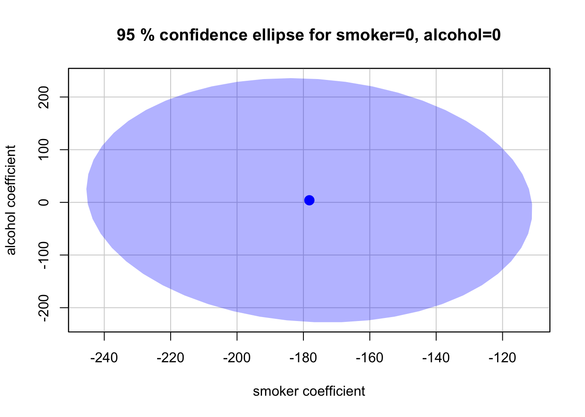

Overview
This tutorial covers testing more than one parameter at the same time; joint hypothesis tests.
Again, we are using the same data-set used in the last tutorial, which is named tute8_smoke.csv on the Subject Home Page in Canvas.
Q1
This question is designed to show the difference between using the F statistic routinely reported in R output when estimating a linear regression model that does not account for heteroskedasticity, with two other test that can account for heteroskedasticity.
After loading the required packages and creating a dataframe (which you should be familiar with by now) we can estimate the following model.
reg=lm(birthweight~smoker+alcohol+drinks+nprevisit+tripre1+
tripre2+tripre3+unmarried+educ+age,data=mydata1)giving:
Call:
lm(formula = birthweight ~ smoker + alcohol + drinks + nprevisit +
tripre1 + tripre2 + tripre3 + unmarried + educ + age, data = mydata1)
Residuals:
Min 1Q Median 3Q Max
-2788.6 -302.5 21.4 360.4 2309.1
Coefficients:
Estimate Std. Error t value Pr(>|t|)
(Intercept) 2923.515 131.859 22.172 < 2e-16 ***
smoker -178.207 27.436 -6.495 9.67e-11 ***
alcohol 3.942 94.675 0.042 0.96679
drinks -3.027 18.861 -0.160 0.87252
nprevisit 32.087 3.406 9.421 < 2e-16 ***
tripre1 209.527 112.336 1.865 0.06226 .
tripre2 268.819 110.849 2.425 0.01536 *
tripre3 385.345 119.054 3.237 0.00122 **
unmarried -206.856 28.795 -7.184 8.53e-13 ***
educ 1.828 5.562 0.329 0.74242
age -2.143 2.270 -0.944 0.34533
---
Signif. codes: 0 '***' 0.001 '**' 0.01 '*' 0.05 '.' 0.1 ' ' 1
Residual standard error: 564.6 on 2989 degrees of freedom
Multiple R-squared: 0.09381, Adjusted R-squared: 0.09078
F-statistic: 30.94 on 10 and 2989 DF, p-value: < 2.2e-16The F statistic reported above is for the null that all the slope estimates jointly all zero e.g. \(H_0:\beta_1=\beta_2= \dots \beta_{10}=0\) if we reject the null in this test then the model is useless (we are only left with the intercept).
The other way to think of this is that the null is \(\beta_1=0,\beta_2=0,\dots \beta_{10}=0\)
where the \(\text{,}\) (commas) mean “and”.
This is a special case of a joint hypothesis test where we are testing “the overall significance of the model”.
If we do not reject the null hypothesis then the model is “useless” - it explains none of the variation in the dependent variable.
So how is this different than just looking at the p-values for each of the individual parameter estimates?
This is explained in Lecture 7 slides 13-14 . We can’t use individual t tests but need a joint test.
Under the null hypotheses, the test for the overall significance of the model follows a F distribution with \((q, n-k-1)\) degrees of freedom (go back to Lecture 2 to see how the F distribution works).
You could use the critical value approach to determine whether to reject or not reject the null however it is much easier to use the p-value approach.
So looking at the output above, the F=30.94 with a p-value of 2.2e-16 (pratically zero) so we reject the null and conclude that the model is useful.
The output also gives the degrees of freedom for this F test e.g. \(q=10\) and \(n-k-1=2989\) \(\Rightarrow F \thicksim (10,2989)\) .
However, this test statistic assumes that the errors are homoskedastic.
We saw last week, the consequences of this assumption being violated and said that from now on we would use HC sandard errors.
waldtest(reg, vcov = vcovHC(reg, "HC1"))Wald test
Model 1: birthweight ~ smoker + alcohol + drinks + nprevisit + tripre1 +
tripre2 + tripre3 + unmarried + educ + age
Model 2: birthweight ~ 1
Res.Df Df F Pr(>F)
1 2989
2 2999 -10 23.88 < 2.2e-16 ***
---
Signif. codes: 0 '***' 0.001 '**' 0.01 '*' 0.05 '.' 0.1 ' ' 1To see the difference in not accounting for any heteroskedasticity compare the values of the F statistic using either the Wald or the LinearHypothesis test functions in R.
linearHypothesis(reg,c("smoker=0",
"alcohol=0",
"drinks=0",
"nprevisit=0",
"tripre1=0",
"tripre2=0",
"tripre3=0",
"unmarried=0",
"educ=0",
"age=0"),vcov = vcovHC(reg, "HC1"))
Linear hypothesis test:
smoker = 0
alcohol = 0
drinks = 0
nprevisit = 0
tripre1 = 0
tripre2 = 0
tripre3 = 0
unmarried = 0
educ = 0
age = 0
Model 1: restricted model
Model 2: birthweight ~ smoker + alcohol + drinks + nprevisit + tripre1 +
tripre2 + tripre3 + unmarried + educ + age
Note: Coefficient covariance matrix supplied.
Res.Df Df F Pr(>F)
1 2999
2 2989 10 23.88 < 2.2e-16 ***
---
Signif. codes: 0 '***' 0.001 '**' 0.01 '*' 0.05 '.' 0.1 ' ' 1You can see that both the LinearHypothesis and Wald test commands yield exactly the same F statistic and that both of these F statistics , accounting for heteroskedastic errors, are smaller than that provided in the R estimation output that does not account for heteroskedasicity.
Q2
OK, we have our preferred model (from last tute) and have provided the Prime Minister (PM) with a report of the results.
The PM’s office then gets back and wants answers to the following questions in order to put together a policy and ad campaign to promote women adopting more healthy practices leading to more healthy babies.
First question: it looks as though smoking definitely decreases babies birthweight but drinking alcohol while pregnant doesn’t. Please explain?
The question arises because the individual t-tests on smoker and alcohol are respectively significant and not significant, but are they jointly significant?
Test \(H_0: \beta_1=0 ,\, \beta_2=0\)
linearHypothesis(reg,c("smoker=0","alcohol=0"),vcov = vcovHC(reg, "HC1"))
Linear hypothesis test:
smoker = 0
alcohol = 0
Model 1: restricted model
Model 2: birthweight ~ smoker + alcohol + drinks + nprevisit + tripre1 +
tripre2 + tripre3 + unmarried + educ + age
Note: Coefficient covariance matrix supplied.
Res.Df Df F Pr(>F)
1 2991
2 2989 2 21.618 4.77e-10 ***
---
Signif. codes: 0 '***' 0.001 '**' 0.01 '*' 0.05 '.' 0.1 ' ' 1How come?
Look at the individual HC 95% CI’s for each parameter estimate are
robustCI_reg1 2.5 % 97.5 %
(Intercept) 2664.971352 3182.058878
smoker -232.002904 -124.410495
alcohol -181.692922 189.576418
drinks -40.008331 33.954997
nprevisit 25.408610 38.765517
tripre1 -10.737615 429.790736
tripre2 51.470822 486.166501
tripre3 151.908297 618.781877
unmarried -263.317320 -150.395622
educ -9.078082 12.734485
age -6.593808 2.308528Notice that the 95% CI for alcohol contains zero which matches the result of the t-test where \(H_0:\beta_2=0\) is not rejected, while the 95% CI for smoker does not contain zero which supports the rejection of \(H_0:\beta_1=0\).
However, when we run a joint test take into account any correlation (multicollinearity) between the variables so we don’t get CI’s but rather a Confidence Ellipse (CE) e.g. the 95% CE for the joint test \(H_0:\beta_1=0,\, \beta_2=0\) is
confidenceEllipse(reg,fill=T,lwd=0,which.coef=c("smoker", "alcohol"),
main= "95 % confidence ellipse for smoker=0, alcohol=0")
Note that the point \((0,0)\) is not in the CE which lines up with rejecting the null in the above test.
Are smoker and alcohol highly correlated?
xtabs(~smoker+alcohol,data=mydata1) alcohol
smoker 0 1
0 2391 27
1 551 31A further consequence of imperfect multicollinearity is that individually some parameter estimates are not significant, yet jointly they are significant.
One cause of this is a high degree of correlation between these explanatory variables.
From this 2931/3000 both do not smoke nor drink alcohol during pregnancy so there is a strong association between these variables.
The causes imperfect multicollinearity which inflates the individual standard errors causing, in this case, for us to not reject that the alcohol parameter is not significant, while rejecting the null that alcohol and smoker are jointly not significant.
We can also test to what the effect smoking and drinking during prenancey has on babies birthweight.
For example. \(H_0:\beta_1=-200, \, \beta_2=-50\)
linearHypothesis(reg,c("smoker=-200","alcohol=-50")
,vcov = vcovHC(reg, "HC1"))
Linear hypothesis test:
smoker = - 200
alcohol = - 50
Model 1: restricted model
Model 2: birthweight ~ smoker + alcohol + drinks + nprevisit + tripre1 +
tripre2 + tripre3 + unmarried + educ + age
Note: Coefficient covariance matrix supplied.
Res.Df Df F Pr(>F)
1 2991
2 2989 2 0.547 0.5787We fail to reject the null at the 5% level that smoking during pregnancy reducers a baby’s birthweight by 200 grams \(\underline{\smash{\text{and}}}\) that drinking alcohol leads to a 50 gram reduction in birthweight.
What about the combined effect? Does the sum effect of smoking and drinking on average lower birthweight by 250 grams?
linearHypothesis(reg,c("smoker+alcohol=-250"),vcov = vcovHC(reg, "HC1"))
Linear hypothesis test:
smoker + alcohol = - 250
Model 1: restricted model
Model 2: birthweight ~ smoker + alcohol + drinks + nprevisit + tripre1 +
tripre2 + tripre3 + unmarried + educ + age
Note: Coefficient covariance matrix supplied.
Res.Df Df F Pr(>F)
1 2990
2 2989 1 0.6738 0.4118The F statistic is 0.6738 with a p-value of 0.4118, so we fail to reject the null at the 5% level smoking and drinking have a combined effect of a decrease in birthweight of 250 grams.
Looking now at pre-natal visits, we can see from the regression output that only tripre3 is statistically significant at the 5% level.
Again, there could be multicollinearity here. While tripre1 and tripre2 are individually not significant they are the jointly significant (at the 5% level).
linearHypothesis(reg, c("tripre1=0","tripre2=0"),vcov=vcovHC(reg,"HC1"))
Linear hypothesis test:
tripre1 = 0
tripre2 = 0
Model 1: restricted model
Model 2: birthweight ~ smoker + alcohol + drinks + nprevisit + tripre1 +
tripre2 + tripre3 + unmarried + educ + age
Note: Coefficient covariance matrix supplied.
Res.Df Df F Pr(>F)
1 2991
2 2989 2 3.0373 0.04811 *
---
Signif. codes: 0 '***' 0.001 '**' 0.01 '*' 0.05 '.' 0.1 ' ' 1Q3
We can undertake the test that \(H_0: \beta_5=0, \, \beta_6=0\) another way (however this assumes that the errors are homoskedastic).
- Run the completed model first; call this the UnRestricted Model (UR)
- Impose the restriction given by the null to the model in 1.
- Then estimate the Restricted Model (R)
then use:
\[F=\dfrac{\left( R_U^2-R_r^2 \right)/k}{\left(1-R_U^2 \right)/(n-k-1)}\]
giving:
## Run the unrestricted regression and save the unrestricted R-Squared, assuming homoskedasticity
reg1=lm(birthweight~smoker+alcohol+drinks+nprevisit+tripre1+tripre2+tripre3+unmarried+educ+age,data=mydata1)
R2u=summary(reg1)$r.squared
## Run the restricted regression where the coefficients tripre1=0, tripre2=0, tripre3=0
## and save the restricted R-Squared, assuming homoskedasticity
reg2=lm(birthweight~smoker+alcohol+drinks+nprevisit+unmarried+educ+age,data=mydata1)
R2r=summary(reg2)$r.squared
## Compute the homoskedasticity-only F-statistic (df1=3, df2=3000-10-1=2989)
num1=(R2u-R2r)/3
denom1=(1-R2r)/2989
Fstat1=num1/denom1
## Compute p-value for Fstat using cumulative density function of F-distribution
## with df1=3, df2=2989 degrees of freedom; see tute3.R for CDF commands if needed
pval1=1-pf(Fstat1,df1=3,df2=2989)
print(R2u)
## [1] 0.09380756
print(R2r)
## [1] 0.08901254
print(Fstat1)
## [1] 5.244244
print(pval1)
## [1] 0.001310058\[\begin{align*}F & = \dfrac{\left(R_u^2 - R_r^2 \right)/k}{\left(1-R_u^2 \right)/ \left( n-k-1 \right)} \\ & =\dfrac{(0.0938-0.0890)/3}{(1-0.0938)/2989} \\ & = 5.272\end{align*}\]
We obtain a p-value=1-pf(5.272,df1=3,df2=2989)=0.0013, which implies we reject the null implied by the restrictions under the restricted model at the 1% level of significance.
In other words, given our sample, there is a sufficiently large drop in the R-Squared from 0.0938 under the unrestricted model to 0.0890 under the restricted model from imposing the joint constraint that the coefficients on tripre1, tripre2 and tripre3 all equal 0 such that we are able to reject the hypothesis that the data were generated under these restrictions.
The drop in model fit when the restrictions are relaxed is too large to rationalise these restrictions statistically.
Q4
One further test we could undertake is that the effect of smoking during pregnancy is the same as an unmarried mother drinking alcohol on a baby’s birthweight.
The easiest way to identify the number of restrictions is to count the number of “=” signs in the null hypothesis.
Here there is only one “=” sign so there is one restriction
Test \(\beta_1 = \beta_2+\beta_{10}\)
reg=lm(birthweight~smoker+alcohol+drinks+nprevisit+tripre1+tripre2+tripre3
+unmarried+educ+age,data=mydata1)
linearHypothesis(reg,c("alcohol+unmarried=smoker"),vcov = vcovHC(reg, "HC1"))
Linear hypothesis test:
- smoker + alcohol + unmarried = 0
Model 1: restricted model
Model 2: birthweight ~ smoker + alcohol + drinks + nprevisit + tripre1 +
tripre2 + tripre3 + unmarried + educ + age
Note: Coefficient covariance matrix supplied.
Res.Df Df F Pr(>F)
1 2990
2 2989 1 0.0582 0.8094We obtain a F statistic of 0.0582 (with df1=1, df2=2989) with a p-value of 0.0894 so do not reject the null that smoking during pregnancy has the same effect on a baby’s birthweight as an unmarried mother drinking alcohol during pregnancy.
there are a number of other joint tests in Q4 that you should try as practice - see the Rscript file tute8.R to run these tests (the solutions are below).
e.g.
- Test the joint null that the coefficient on smoker equals the coefficient on
alcohol against the alternative that the equality does not hold.- Test the joint null that the coefficient on smoker is twice the coefficient of
alcohol against the alternative that the equality does not hold.- Test the joint null that the sum of the coefficients on smoker and alcohol
equals -200 against the alternative that the equality does not hold.- Test the joint null that the coefficient on tripre1 equals the coefficient on
tripre2 and that the coefficient on tripre2 equals the coefficient on tripre3
against the null that at least one of the equalities does not hold.- Test the joint null that the coefficient on tripre2 equals 2 times the coefficient
on tripre1 and that the coefficient on tripre3 equals 2 times the coefficient on
tripre2 against the null that at least one of the equalities does not hold
Solutions
- Test joint null that the coefficient on smoker equals the coefficient on alcohol:
F-statistic=3.515, df1=1, df2=2989, p-value=0.061. Fail to reject the null at the 5% level of significance, meaning we cannot reject the null that smoking and drinking alcohol have the same impact on birthweight.
Note here while we find individually statistically significant effects for smoker but not alcohol on birthweight, we are unable to detect a statistically significant difference between the effects of smoker and alcohol on birthweight. - Test joint null that the coefficient on smoker is twice the coefficient alcohol:
F-statistic=1.000, df1=1, df2=2989, p-value=0.317.
Fail to reject the null at the 5% level of significance, meaning we cannot reject the null that smoking has twice as large an impact on birthweight relative to drinking. - Test joint null that the sum of the coefficients on smoker and alcohol equals -200:
F-statistic=0.078, df1=1, df2=2989, p-value=0.780. Fail to reject the null at the 5% level of significance, meaning we cannot reject the null that smoking and drinking alcohol together yields a 200 gram reduction in birthweight. - Test joint null that the coefficient on tripre1 equals the coefficient on tripre2 and that the coefficient on tripre2 equals the coefficient on tripre3:
Fstatistic= 3.511, df1=2, df2=2989, p-value=0.030. Reject the null at the 5% level of significance, meaning we reject the null that first having prenatal care in the first, second, or third semester has the same impact on birthweight.
Looking the individual regression coefficients for tripre1, tripre2 and tripre3 in the regression, they have values of 209, 268, and 385, respectively.
So this joint test result formally confirms intuition about differential effects on birthweight, depending on when a baby first receives prenatal care. The large jump in the coefficient on tripre3 relative to tripre1 and tripre2 is preliminary evidence against the joint null hypothesis, which is confirmed by the test’s F-statistic and p-value. - Test joint null that the on tripre2 equals 2 times the coefficient on tripre1 and that the coefficient on tripre3 equals 2 times the coefficient on tripre2:
Fstatistic= 0.4754, df1=2, df2=2989, p-value=0.6217. Fail to reject the null at the 5% level of significance, meaning we fail to reject the null that the effect of when a baby first receives prenatal care on birthweight doubles with each successive trimester.
Q5
Can we conduct a t-test using this hypothesis?
Yes; because there is only one restriction \(\left( q=1 \right)\).
However, this can get complicated as the test statistic would be:
\(t= \dfrac{\left(\hat{\beta_1}-\hat{\beta_2}- \hat{\beta_3}\right) - \left(\beta_1-\beta_2 -\beta_3 \right)}{se\left(\hat{\beta_1}-\hat{\beta_2}- \hat{\beta_3} \right)}\)
the denominator is
\(\widehat{\sqrt{ [{var{\beta_1} + var{\beta_2} + var{\beta_3}-2cov(\beta_1,\beta_2) - 2cov(\beta_1,\beta_3)-2cov(\beta_2,\beta_3)]} }}\)
This is because the OLS estimators, and hence the estimates, are random variables and are not independent.
however, there is another way to do this.
- Rearrange the null \(H_0: \beta_1=\beta_2 + \beta_3\, \Rightarrow \beta_1-\beta_2-\beta_3=0\)
- multiply the variable associated with \(\beta_1\) e.g. \(X_1\) by \(\beta_2\) and then \(\beta_3\)
- then add and subtract \(\beta_2 X_1\) and \(\beta_{3} X_1\)
- next gather like terms and create composite \(X\) variables
In this example we have:
Let: \(Y\) = \(birthweight_i\)
\(\,\,\quad X_1\) = \(smoker_i\)
\(\,\,\quad X_2\) = \(alcohol_i\)
\(\,\,\quad X_3\) = \(unmarried_i\)
\[\begin{align*} Y &= \beta_0 + \beta_1 X_1+ \beta_2 X_2 +\beta_3X_3+u_i\\ &= \beta_0 + \beta_1 X_1+ \beta_2 X_2 +\beta_3X_3+u_i + \color{blue}{\beta_2} X_1 - \beta_2 X_1 + \beta_3 X_1 - \beta_3 X_1 \\ &= \beta_0 + \left(\beta_1-\beta_2-\beta_3 \right) X_1 + \beta_2 X_2 + \beta_3 X_3 + u_i + \beta_2 X_1 + \beta_3 X_1 \\ &= \beta_0 + \underbrace{\left(\beta_1-{\color{blue}{\beta_2-\beta_3}} \right)}_{\gamma} X_1 + \beta_2 \underbrace{\left(X_2+{\color{blue}{X_1}} \right)}_{W_i} + \beta_3 \underbrace{\left(X_3 + {\color{blue}{X_1}} \right)}_{Z_i} + u_i \\ & = \beta_0 + \gamma X_1 + \beta_2 W_i + \beta_3 Z_i + u_i\end{align*}\]
When we include all the other controls in the transformed regression, we obtain the following regression, which we use to test the joint null hypothesis based on the smoker coefficient, \(\gamma\) ,in the tute8.r code:
\[\begin{multline*}birthweight_i = \beta_0 + \gamma smoker_i + \beta_2 W_i + \beta_3 Z_i + \beta_4 drinks_i + \beta_5 nprevisit_i \\ + \beta_6 tripre1_i + \beta_7 tripre2_i + \beta_8 tripre3_i + \beta_9 educ_i + \beta_{10} age_i + u_1\end{multline*}\]
## construct W
mydata1$W=mydata1$alcohol+mydata1$smoker
## construct Z
mydata1$Z=mydata1$unmarried+mydata1$smoker
## Re-run the transformed regression and conduct t-test
regq5=lm(birthweight~smoker+W+Z+drinks+nprevisit+tripre1+tripre2+tripre3+educ+age,data=mydata1)
coeftest(regq5, vcov = vcovHC(regq5, "HC1"))
t test of coefficients:
Estimate Std. Error t value Pr(>|t|)
(Intercept) 2923.5151 159.5741 18.3207 < 2.2e-16 ***
smoker 24.7080 102.4462 0.2412 0.80943
W 3.9417 90.7529 0.0434 0.96536
Z -206.8565 31.2952 -6.6099 4.539e-11 ***
drinks -3.0267 16.4270 -0.1842 0.85383
nprevisit 32.0871 4.2500 7.5498 5.753e-14 ***
tripre1 209.5266 148.8734 1.4074 0.15941
tripre2 268.8187 146.6549 1.8330 0.06690 .
tripre3 385.3451 155.4357 2.4791 0.01323 *
educ 1.8282 5.5373 0.3302 0.74130
age -2.1426 2.4573 -0.8720 0.38330
---
Signif. codes: 0 '***' 0.001 '**' 0.01 '*' 0.05 '.' 0.1 ' ' 1Running this transformed regression using the coeftest()}* command we obtain a coefficient estimate on smoker of 24.71 with a standard error of 102.45, and a corresponding p-value = 0.8094 for the test of the null that the coefficient on smoker is equal to 0.
Based on the transformation calculations in the regression equation, testing whether the coefficient on smoker equals 0 is equivalent to testing the null that the effect of smoker on birthweight is the same as the sum of the effects of alcohol and unmarried on birthweight.
From Lecture 2 we know that the t statistic is a ratio of a normal random variable divided by the square root of a Chi-square random variable e.g.
Let \(p\) denote the degrees of freedom (e.g. \(p=n-k-1\) in the Simple Linear Regression Model), we have
\(t=\dfrac{N(0,1)}{\sqrt{\chi_{(p)}^2 /p}}\)
squaring both sides gives
\(t^2=\dfrac{N^2(0,1)}{\chi_{(p)}^2 /p}\) and \(N^2(0,1) = \chi_{(1)}^2\)
divide the numerator by \(\color{red}{1}\)
\(\dfrac{\chi_{p}^2/{\color{red}{1}}}{\chi_{(p)}^2/p} \thicksim F({\color{red}{1}}, p)\)
\(\Rightarrow F({\color{red}{1}},p) =t_p^2\)
You don’t have to know the derivation but you will need this result (last line). Please note this only holds when there is one restriction.
Indeed, if we estimate our original (untransformed) regression model and use the linearHypothesis command to carry out the joint test we get the same p-value.
The take out is, that in the case of testing one restriction there is a relationship between the t and the F statistics e.g. \(t^2=F\) and also \(t_c^2= F_c\).
For example,
linearHypothesis(reg,c("smoker-alcohol-unmarried=0"),vcov = vcovHC(reg, "HC1"))
Linear hypothesis test:
smoker - alcohol - unmarried = 0
Model 1: restricted model
Model 2: birthweight ~ smoker + alcohol + drinks + nprevisit + tripre1 +
tripre2 + tripre3 + unmarried + educ + age
Note: Coefficient covariance matrix supplied.
Res.Df Df F Pr(>F)
1 2990
2 2989 1 0.0582 0.8094# note that t^2=F where t=0.2412 is the test statistic for smoker in
# the transformed regression e.g.
0.2412^2[1] 0.05817744# and t_c^2 =F_c
qtq5<-qt(0.975,2989)
qtq5[1] 1.960758qtq5^2[1] 3.844572qf(0.95,1,2989)[1] 3.844572